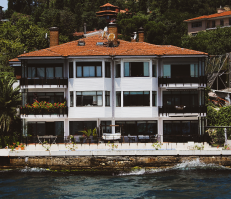

Los Geht's 濟南館
座落於台北市中心的國際五星級商務度假酒店，擁有豐富歷史典藏、人文風貌、商業機能完善。酒店將台北儒風意象化為設計元素，運用閩式建築特色妝點空間，走入飯店皆是藏於細節中的心意。

Los Geht's 濱江館
以傲人之姿座落於國家公園境內的國際五星級度假酒店，秀麗山色即是天然藝術品。任何季節來訪皆有不同的景色，面峽谷、望山嵐、聆聽溪水協奏曲，恣意享受來自太魯閣的清新與暖意。